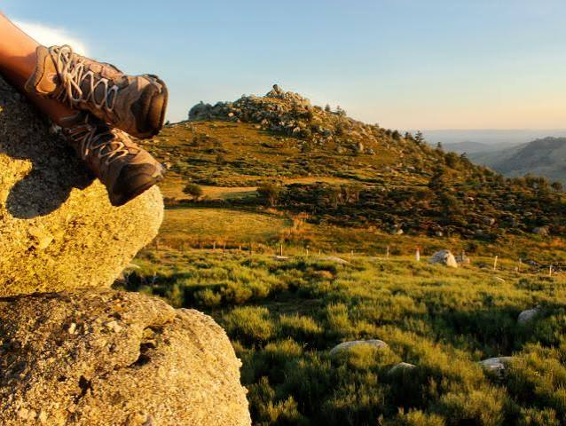
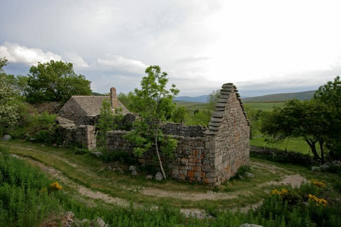

Écomusée du
Mont Lozère


⟹ Écomusée & Patrimoine Rural ⟸
Créé en 1984, l'écomusée du Mont Lozère naît d'une ambition originale : ne pas enfermer le patrimoine dans un seul bâtiment, mais le donner à voir sur l'ensemble du massif, à travers ses fermes, ses hameaux et ses paysages façonnés par des siècles de vie pastorale.

La collection permanente illustre l'économie agricole de moyenne montagne, dominée par l'élevage : le travail de la laine, la culture du seigle et l'architecture de granite typique des hameaux du massif racontent l'adaptation d'une société à un environnement exigeant.
L'espace d'exposition du Pont-de-Montvert est fermé au public depuis 2018. Un projet de renouvellement complet est engagé, avec la création d'une future « Maison du Mont Lozère » qui mutualisera office de tourisme et espace muséographique, autour de l'agropastoralisme dans sa dimension contemporaine.

En attendant cette réouverture, l'esprit de l'écomusée continue de vivre à travers les nombreux sites emblématiques répartis sur le massif, accessibles librement au fil des sentiers de randonnée.
Un musée à ciel ouvert : au-delà de son espace d'exposition, l'écomusée se déploie sur l'ensemble du massif sous la forme de sentiers thématiques et de sites remarquables ouverts à tous.
Un territoire classé par l'UNESCO : les paysages culturels de l'agropastoralisme méditerranéen des Causses et des Cévennes, dont fait partie le Mont Lozère, sont inscrits au patrimoine mondial depuis 2011.
Une future Maison du Mont Lozère : le projet en cours vise à réunir, en un lieu unique, office de tourisme et nouvel espace muséographique consacré à l'agropastoralisme d'hier et d'aujourd'hui.
Un massif giron de sources : le Mont Lozère alimente notamment le Tarn, le Lot et l'Allier, trois rivières majeures qui prennent naissance sur ses flancs granitiques.
Cœur historique Écomusée du Mont Lozère, Le Pont-de-Montvert, 48220 Pont-de-Montvert–Sud-Mont-Lozère.
Espace d'exposition fermé au public depuis 2018 dans l'attente de la future Maison du Mont Lozère ; se renseigner auprès de l'office de tourisme des Cévennes au Mont Lozère pour l'avancement du projet.
Sentiers et sites librement accessibles toute l'année ; se renseigner sur l'état des chemins en hiver, période où l'enneigement peut limiter certains accès en altitude.
Accès Le Pont-de-Montvert se situe à environ 45 km au sud-est de Mende par la D998 et la D20 ; le massif est également accessible depuis Florac ou la station du Bleymard-Mont Lozère par la D901.